Hi there 👋 I am Shuang Li!
I am a Ph.D. student in the Smart Mind and Super Vision Group at Chongqing University of Posts and Telecommunications, advised by Prof. Xinbo Gao and Prof. Jiaxu Leng.
My research focuses on human-centered trustworthy video surveillance systems, especially person re-identification, visible-infrared perception, face super-resolution, and small object detection. Before my Ph.D. study, I received my M.Eng. from Kunming University of Science and Technology under the supervision of Prof. Huafeng Li. Earlier, I earned my B.Eng. from Chongqing University of Posts and Telecommunications, advised by Associate Prof. Linghui Liu and Prof. Xiao Luan.
News
- 2026/07🎉One collaborative paper on VVI-ReID was accepted to ACM MM 2026.
- 2026/07🎉One collaborative paper on low-light image enhancement was accepted to ECCV 2026.
- 2026/06🎉One first-author paper on unsupervised video-based visible-infrared person re-identification was accepted by IEEE TIFS.
- 2026/05🎉One first-author paper on hyperbolic hierarchical alignment for video-based visible-infrared person re-identification was accepted to ICML 2026.
- 2026/04🎉One collaborative paper on spatial-temporal high-frequency learning was accepted by IEEE TCSVT.
- 2026/04🎉One collaborative paper on physical regularization for image segmentation was accepted by IJCV.
- 2026/03🎉One collaborative paper on small object detection was accepted by IEEE TNNLS.
- 2026/02🎉One collaborative paper on hierarchical prompt learning was accepted to AAAI 2026.
- 2026/02🎉One collaborative paper on dynamic-static collaboration was accepted to AAAI 2026.
- 2026/02🎉One collaborative paper on progressive face super-resolution was accepted to AAAI 2026.
- 2025/10🎉One collaborative paper on DINOv2-driven gait representation learning was accepted to ACM MM 2025.
- 2025/09🎉One collaborative paper on deepfake detection was accepted by IEEE TCSVT.
- 2025/08🎉One collaborative paper on graph-enhanced CLIP for 3D hand pose estimation was accepted by IEEE TMM.
- 2025/07🎉One first-author paper on video-level language-driven visible-infrared person re-identification was accepted by IEEE TIFS.
- 2025/06🎉One first-author paper on shape-centered representation learning was accepted by Pattern Recognition.
- 2025/05🎉One collaborative paper on bearing fault diagnosis was accepted by IEEE TIM.
- 2025/04🎉One collaborative paper on dual-space video person re-identification was accepted by IJCV.
- 2025/03🎉One collaborative paper on text-to-image person re-identification was accepted by IEEE SPL.
- 2025/02🎉One collaborative paper on scale-adaptive face super-resolution was accepted by IEEE IoT Journal.
- 2024/12🎉One collaborative paper on small object detection was accepted by IEEE TCSVT.
- 2024/04🎉One collaborative paper on text-to-image person retrieval was accepted to ICASSP 2024.
- 2024/03📌One first-author paper on cloth-changing person re-identification was released on arXiv.
- 2023/11🎉One first-author paper on domain adaptation person re-identification was accepted by IEEE TNNLS.
- 2022/10🎉One collaborative paper on sketch re-identification was accepted to ACM MM 2022.
- 2022/08🎉One collaborative paper on domain-adaptive person re-identification was accepted by IEEE TIFS.
- 2022/06🎉One first-author paper on unsupervised domain adaptation person re-identification was accepted by SMPT.
- 2022/03🎉One collaborative paper on video-based visible-infrared person re-identification was accepted to CVPR 2022.
Experience
2023.09 - Present
Ph.D. student in Computer Science and Technology.
Advised by Prof. Xinbo Gao and Prof. Jiaxu Leng.
Research interests: person re-identification, visible-infrared perception, and trustworthy video surveillance.
2019.09 - 2022.06
M.Eng. student, advised by Prof. Huafeng Li.
Built the foundation for current research in computer vision and person re-identification.
2015.09 - 2019.06
B.Eng. in Software Engineering.
Image Cognition Chongqing Key Laboratory, advised by Associate Prof. Linghui Liu and Prof. Xiao Luan.
Publications
(* equal contribution · † corresponding author)
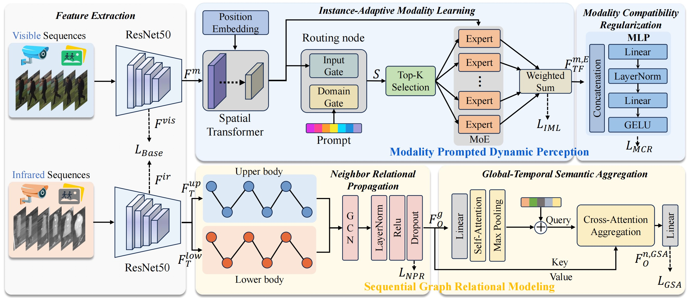
DMTA adapts modality and temporal cues dynamically for robust video-based visible-infrared person re-identification across cross-modal sequence variations.
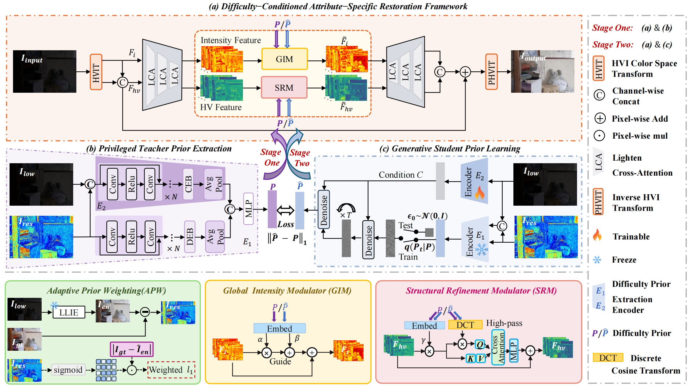
DCASR performs difficulty-conditioned, attribute-specific restoration to adaptively enhance low-light images under diverse degradation levels.
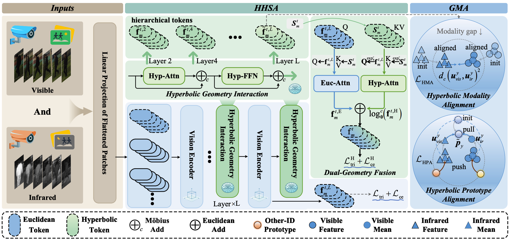
HHA models video-based visible-infrared person re-identification with hierarchical hyperbolic geometry for robust spatio-temporal representation and modality alignment.
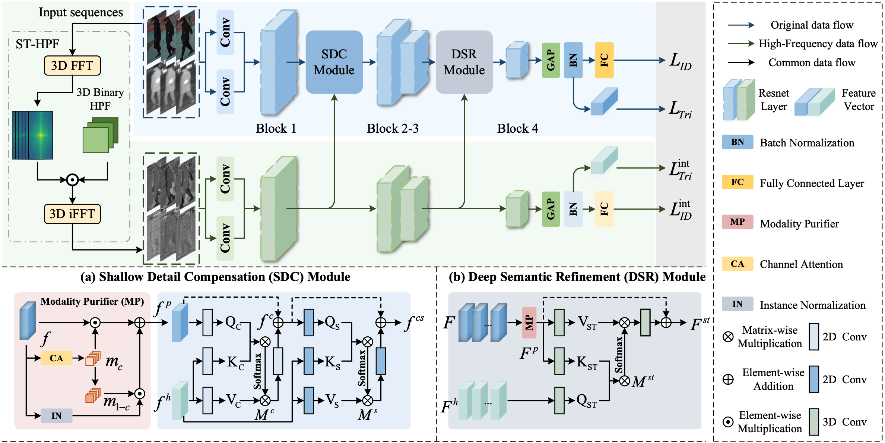
STHF constructs sequence-level high-frequency representations and enhances local details for robust video-based visible-infrared person re-identification.
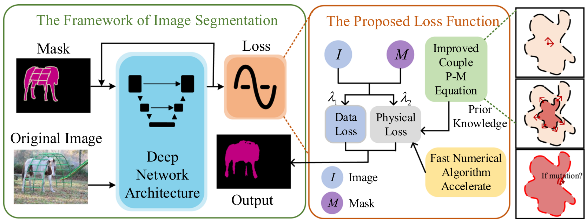
PRL injects physical constraints from anisotropic diffusion equations into segmentation optimization for stronger generalization across segmentation tasks.
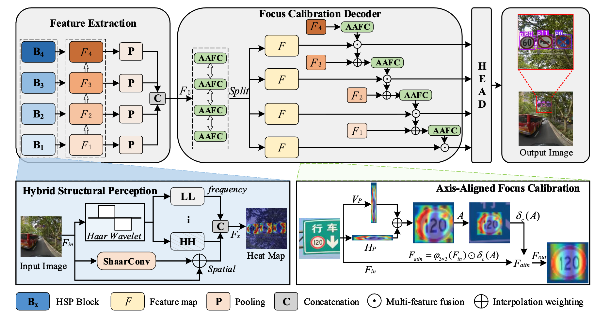
PEFC-Net enhances perceptual quality and calibrates focus regions to improve small object detection under challenging visual conditions.
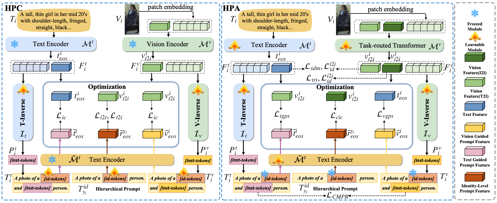
HPL unifies image-to-image and text-to-image person re-identification through task-aware prompt modeling and cross-modal prompt regularization.
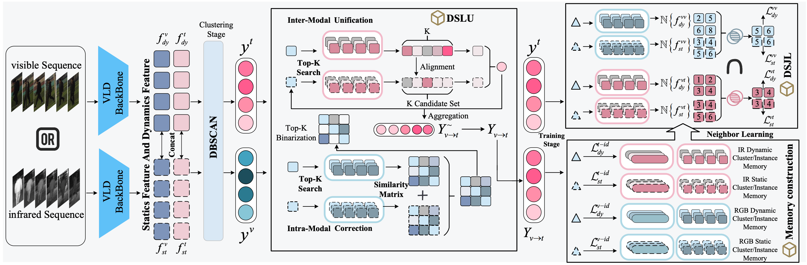
DSC leverages complementary motion and appearance cues to refine pseudo labels and learn robust cross-modal video ReID representations without target labels.
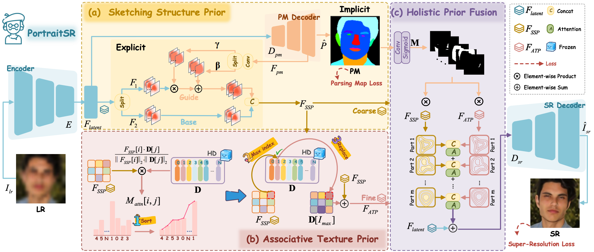
PortraitSR follows a progressive structure-to-texture restoration strategy for semantically consistent and visually realistic face super-resolution.
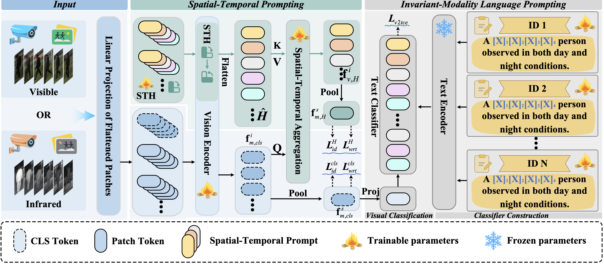
This work explores language-driven video-level representation learning for robust visible-infrared person re-identification across modality and temporal variations.
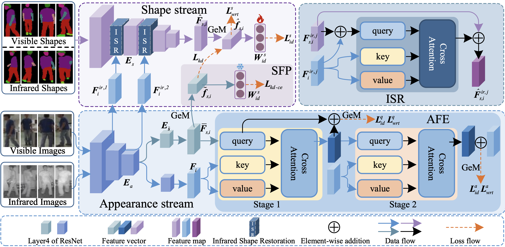
Shape-centered cues are introduced to reduce modality discrepancy and improve identity representation for visible-infrared person re-identification.
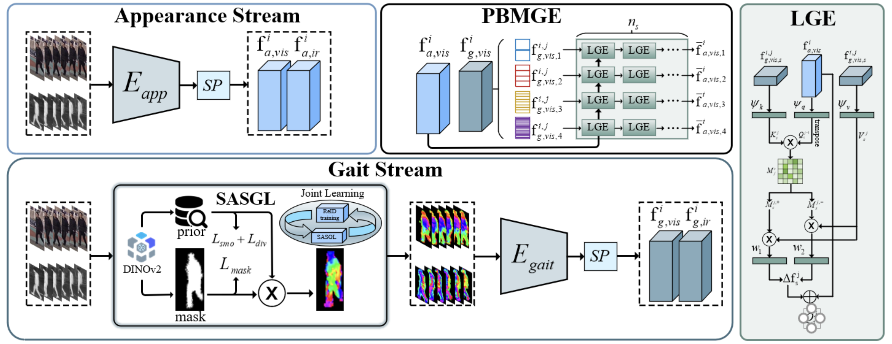
This work uses DINOv2 visual priors to learn gait representations complementary to appearance cues for video-based cross-modal retrieval.
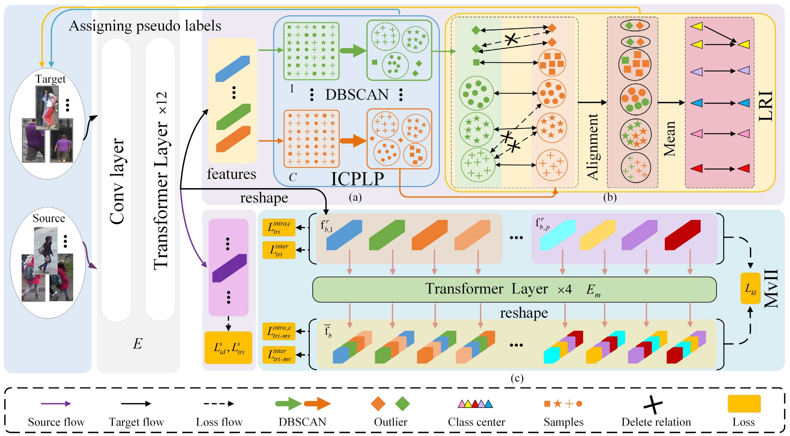
This method improves domain adaptive person ReID through logical relation inference and multiview information interaction for reliable pseudo-label learning.
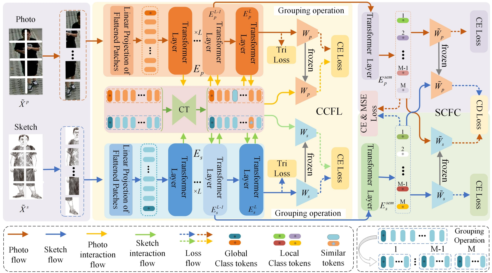
This work builds cross-compatible embeddings and semantic-consistent features to bridge sketch and image modalities for person re-identification.
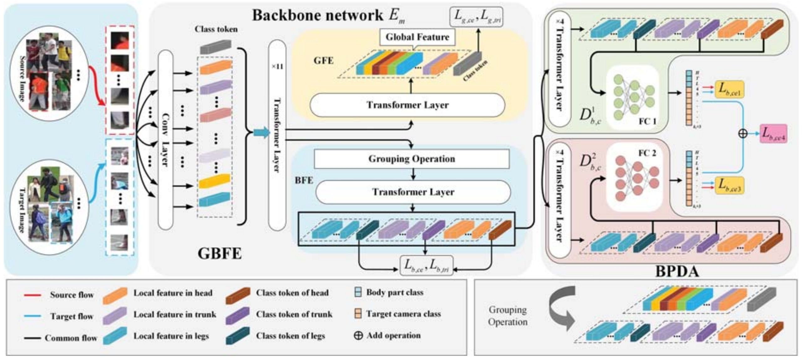
This method aligns body-part representations across domains within a transformer framework for robust domain-adaptive person re-identification.
- ACM MM 2026Dynamic Modality-Temporal Adaptation for Video-based Visible-Infrared Person Re-Identification
CCF-A. - ECCV 2026Difficulty-Conditioned Attribute-Specific Restoration for Low-Light Image Enhancement
CCF-B. - TIFS 2026Causal Bootstrapped Alignment for Unsupervised Video-Based Visible-Infrared Person Re-Identification
SCI Q1; CCF-A. - ICML 2026Hyperbolic Hierarchical Alignment for Video-Based Visible-Infrared Person Re-Identification
CCF-A. - TCSVT 2026Spatial-Temporal High-Frequency Learning for Video-based Visible-Infrared Person Re-Identification
SCI Q1; CCF-B. - IJCV 2026Physical Regularization Loss: Integrating Physical Knowledge to Image Segmentation
CCF-A. - TNNLS 2026Seeing Clearly, Detecting Precisely: Perceptual Enhancement and Focus Calibration for Small Object Detection
SCI Q1; CCF-B. - AAAI 2026Hierarchical Prompt Learning for Image- and Text-Based Person Re-Identification
CCF-A. - AAAI 2026Dynamic-Static Collaboration for Unsupervised Domain Adaptive Video-Based Visible-Infrared Person Re-Identification
CCF-A. - AAAI 2026PortraitSR: Artist-Inspired Prior Learning for Progressive Face Super-Resolution
CCF-A. - ACM MM 2025DINOv2 Driven Gait Representation Learning for Video-Based Visible-Infrared Person Re-identification
CCF-A. - TCSVT 2025Deepfake Detection Leveraging Self-Blended Artifacts Guided by Facial Embedding Discrepancy
- TMM 2025Transferring and Refining Visual-Semantic Priors via Graph-Enhanced CLIP for 3D Hand Pose Estimation
CCF-A. - TIFS 2025Video-Level Language-Driven Video-Based Visible-Infrared Person Re-Identification
SCI Q1; CCF-A. - PR 2025Shape-centered Representation Learning for Visible-Infrared Person Re-Identification
SCI Q1. - TIM 2025Mutual Information-guided Domain Shared Feature Learning for Bearing Fault Diagnosis under Unknown Conditions
- IJCV 2025Dual-Space Video Person Re-identification
CCF-A. - SPL 2025TriMatch: Triple Matching for Text-to-Image Person Re-Identification
- IoT 2025See as You Desire: Scale-Adaptive Face Super-Resolution for Varying Low Resolutions
- TCSVT 2024Small Object Detection Method Based on Global Multi-Level Perception and Dynamic Region Aggregation
- ICASSP 2024MGRL: Mutual-Guidance Representation Learning for Text-to-Image Person Retrieval
- arXiv 2024CLIP-Driven Cloth-Agnostic Feature Learning for Cloth-Changing Person Re-Identification
- TNNLS 2023Logical Relation Inference and Multiview Information Interaction for Domain Adaptation Person Re-Identification
SCI Q1. - ACM MM 2022Cross-compatible Embedding and Semantic Consistent Feature Construction for Sketch Re-Identification
CCF-A. - TIFS 2022Body Part-Level Domain Alignment for Domain-Adaptive Person Re-Identification With Transformer Framework
SCI Q1; CCF-A. - SMPT 2022Mutual Prediction Learning and Mixed Viewpoints for Unsupervised-Domain Adaptation Person Re-Identification on Blockchain
- CVPR 2022Learning Modal-Invariant and Temporal-Memory for Video-Based Visible-Infrared Person Re-Identification
CCF-A.
Projects
重庆市研究生科研创新项目, CYB240237, 2024.07 - 2026.07.
Principal investigator. This project studies robust representation mining for cross-time-domain person re-identification.
Project · Person Re-ID · Robust Representation Learning
重庆邮电大学博士研究生创新人才项目, BYJS202401, 2024.12 - 2026.12.
Principal investigator. This project focuses on all-day cross-modality person re-identification across multiple surveillance scenarios.
Project · Visible-Infrared Learning · Video Surveillance
Awards
- 2022, Outstanding Master's Dissertation, Yunnan Province.
- 2022, Outstanding Master's Dissertation, Kunming University of Science and Technology.
- 2019, Outstanding Bachelor's Dissertation.
Academic Services
- Journal reviewer for TIP, TNNLS, TMM, TCSVT, TETCI, IEEE Internet of Things Journal, Pattern Recognition, ESWA, and Neurocomputing.
- Conference reviewer for CVPR, ICCV, ECCV, ICLR, ICML, NeurIPS, AAAI, ACM MM, IJCAI, and PRCV.